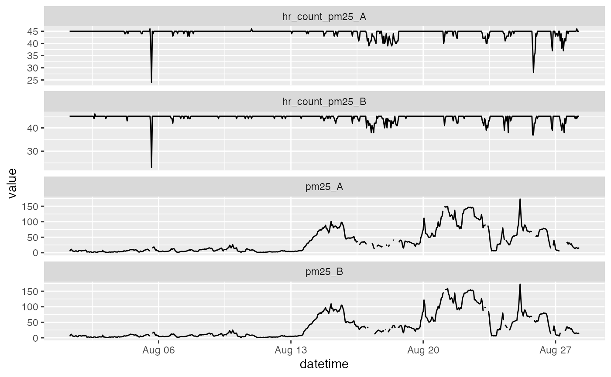
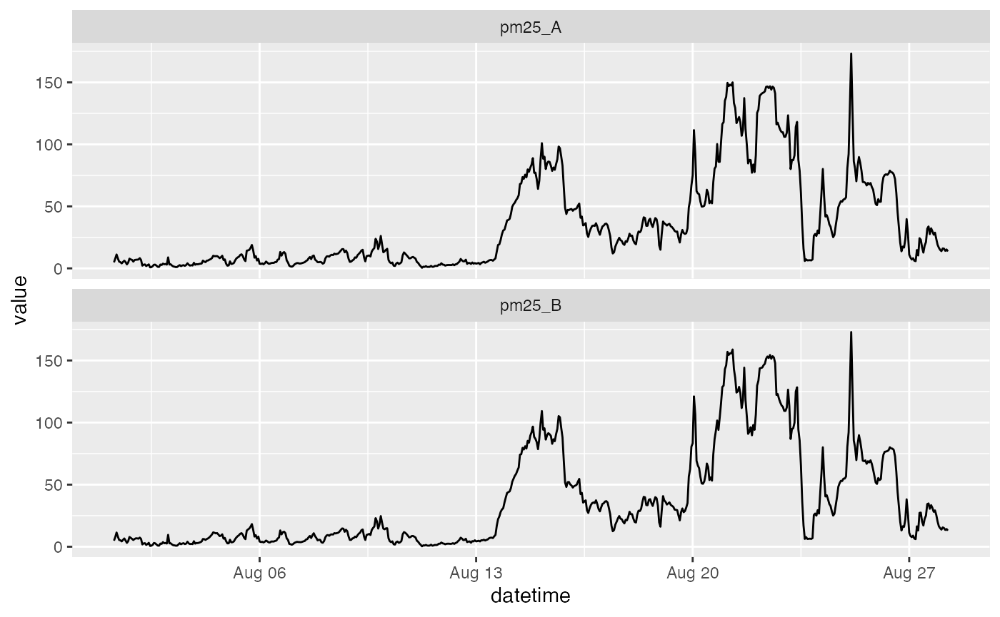

vignettes/articles/Custom_QC_Algorithms.Rmd
Custom_QC_Algorithms.RmdData quality-control is the process of flagging or removing invalid or noise data points from a data set, either manually or algorithmicly. There are many statistical techniques and methods to preform quality-control. In this article we provide a general overview of how to construct such algorithms for use within the AirSensor package. Our goal is to write custom quality-control functions that replace, flag, or remove invalid data points. Data that are out of an instrument’s specifications, that appear to be associated with random noise or are associated with other known issues can be considered invalid.
NOTE: If you haven’t yet read the Temporal Aggregation article, you should read it first in order to understand advanced usage of pat_aggregate().
Let’s start by creating a simple QC algorithm based on the count of the number of data records within an hour. If the count of records is too low, we will replace any aggregated value with NA, otherwise we will return the hourly aggregated value, in this example the mean.
This QC function will create two hourly-aggregated ‘pat’ objects – mean_pat and count_pat and use data from count_pat to invalidate some records in mean_pat.
##
## Attaching package: 'dplyr'## The following objects are masked from 'package:stats':
##
## filter, lag## The following objects are masked from 'package:base':
##
## intersect, setdiff, setequal, union# Load a PurpleAir Timeseries ('pat') object
pat <- example_pat
# Define a QC function that returns an aggregated 'pat' object
QC_hourly_count <- function(pat, minCount = 11) {
# Create mean hourly aggregate pat
mean_pat <- pat_aggregate(pat, function(x) mean(x, na.rm = TRUE))
# Create count of non-missing pat data
count_pat <- pat_aggregate(pat, function(x) length(na.omit(x)))
# Create a minimum count mask
pm25_A_mask <- count_pat$data$pm25_A < minCount
pm25_B_mask <- count_pat$data$pm25_B < minCount
##################
# dplyr/tidyverse version
##################
#pat <- mean_pat
# mean_pat$data <-
# mean_pat$data %>%
# mutate(pm25_A = replace(.data$pm25_A, pm25_A_mask, NA)) %>%
# mutate(pm25_B = replace(.data$pm25_B, pm25_B_mask, NA)) %>%
# mutate(hr_count_pm25_A = count_pat$data$pm25_A) %>%
# mutate(hr_count_pm25_B = count_pat$data$pm25_B)
# pat <- mean_pat
##################
# base R version
##################
pat <- mean_pat
pat$data$pm25_A[pm25_A_mask] <- NA
pat$data$pm25_B[pm25_B_mask] <- NA
pat$data$hr_count_pm25_A <- count_pat$data$pm25_A
pat$data$hr_count_pm25_B <- count_pat$data$pm25_B
return(pat)
}
# Apply the QC function
hourly_count_pat <- QC_hourly_count(pat, minCount = 42)
# Examine the results
timeseriesTbl_multiPlot(hourly_count_pat$data, pattern = "pm25_[AB]")
In the code above, we calculate hourly aggregated average values, mean_pat, and hourly aggregated counts, count_pat. We use the counts to create a mask identifying hours where there is not enough data to meet our minimum threshold, minCount = 42. The mean values for these hours are replaced with NA.
Looking at the plot, we can verify that low count values are associated with missing values of pm25_A/B.
In this example, we construct a more complex QC algorithm using advanced features of pat_aggregate() and a coding style appropriate for seasoned R developers.
The FUN parameter is defined “anonymously” (aka on-the-fly) and calculates a Z-score for each 20-minute period in the data. If the Z-score is below our 0.05 threshold, we replace it with NA. The 20-minute data is then re-aggregated to an 1-hour average and returned. Effectively, this quality-control function is a basic two-tailed Z-score filter that only aggregates data if the it is within the p-value (0.05).
QC_hourly_z_score <- function(pat, threshold = 0.05) {
pat_z_scored_20min_avg <-
pat_aggregate(
pat,
function(x) {
# Caluclate x z-scores
z_score <- scale(na.omit(x)) # (x - mean(x, na.rm = TRUE)) / sd(x, na.rm = TRUE)
# Create z-score mask -
# flag the z-scores who are out of the 5% and 95% quantile range
z_mask <- pnorm(-abs(z_score)) < threshold
x[z_mask] <- NA
# Calculate the 20-min average values without the flagged data
y <- mean(x, na.rm = TRUE)
return(y)
},
unit = 'minutes',
count = 20
)
# Re-aggregate to an 1-hour average of the data
pat <- pat_aggregate(pat_z_scored_20min_avg)
return(pat)
}
hourly_z_score_pat <- QC_hourly_z_score(pat)
# Examine the results
timeseriesTbl_multiPlot(hourly_z_score_pat$data, pattern = "pm25_[AB]")
There are many ways to construct QC algorithms and the examples above illustrate what is possible within the AirSensor framework. We fully expect people to explore possibilities and create different QC algorithms depending on their individual needs: